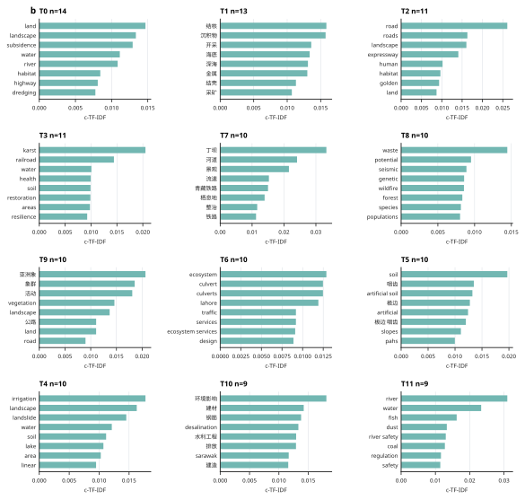
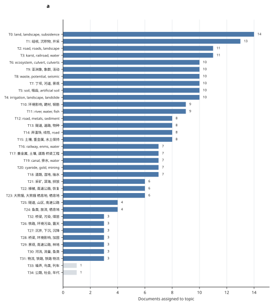
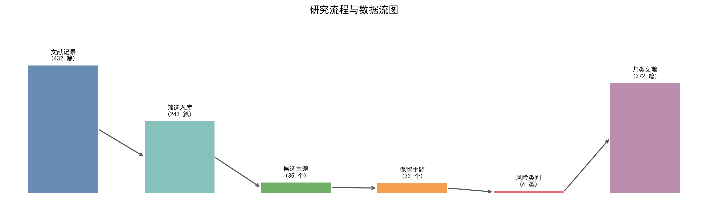
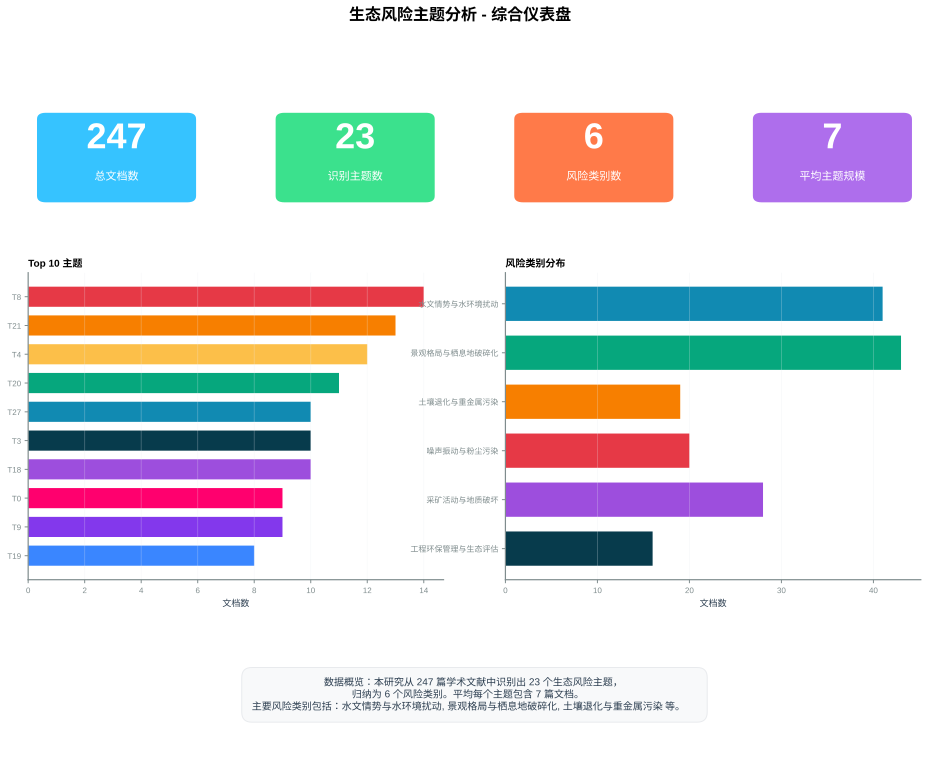
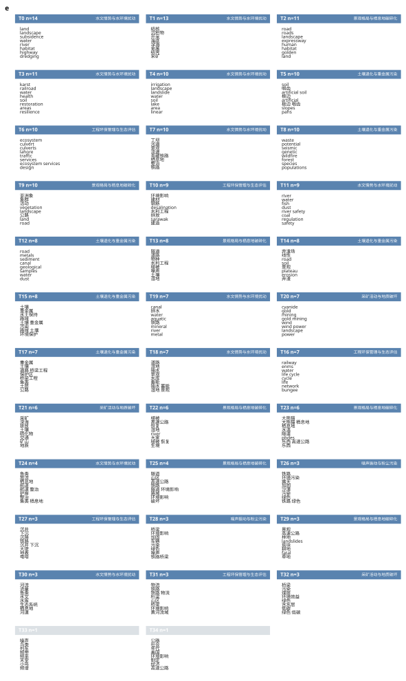
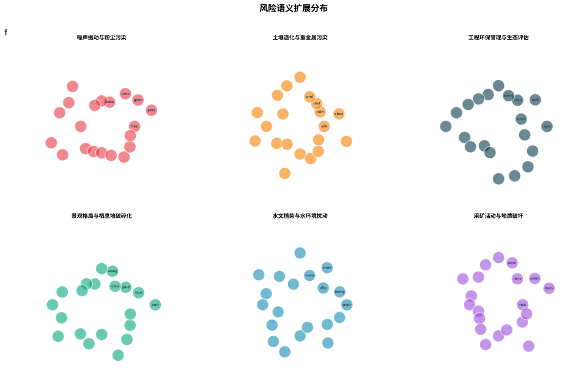

436
NLP · Topic Modeling · Risk Framework
基于 BERTopic 的
重大工程生态风险
智能分析系统
融合深度语义嵌入、无监督聚类与人机协同标注，从 436 篇学术文献中自动提取并构建生态风险主题框架——实现从非结构化文本到结构化风险知识的智能转化。

融合深度语义嵌入、无监督聚类与人机协同标注，从 436 篇学术文献中自动提取并构建生态风险主题框架——实现从非结构化文本到结构化风险知识的智能转化。
批量解析学术文献全文
7模块优先级加权轮次
BGE-M3 · 1024维向量
UMAP + KMeans 聚类
c-TF-IDF 辅助判断
Word2Vec 风险网络
构建 7 大模块关键词词典（K1–K7），通过优先级加权与 10 轮随机采样，从 436 篇文献中精准筛出 243 篇核心文献，筛选精度 55.7%。
BGE-M3 生成 1024 维文档嵌入，UMAP 降维至 5 维后 KMeans 聚类，c-TF-IDF 提取关键词，余弦相似度 0.72 合并相近主题。
基于专家知识将 35 个候选主题归纳为 6 大风险类别，覆盖水环境、土壤、生物多样性、大气、噪声振动及综合生态效应。
训练 Skip-gram 模型捕获风险术语语义关联，自动扩展每个风险类别的关键词集合，构建完整的生态风险语义网络。

c-TF-IDF 各主题代表性关键词

35 个候选主题的文献数量与热度

候选主题到风险类别的映射关系

多维度数据整合与风险类别关联

全局关键词在语义空间中的分布聚集

Word2Vec 风险词汇语义关联网络
设计六阶段流水线架构，实现从 PDF 输入到风险框架输出的端到端自动化
独立实现优先级加权随机轮次筛选、BERTopic 主题建模、Word2Vec 语义扩展
系统梳理生态风险领域术语，构建覆盖水环境、土壤、生物多样性等 7 大模块的专业词典
设计 c-TF-IDF 辅助的专家标注流程，平衡自动化效率与人工判断质量
设计并实现语义空间图、桑基图、综合面板等全套可视化